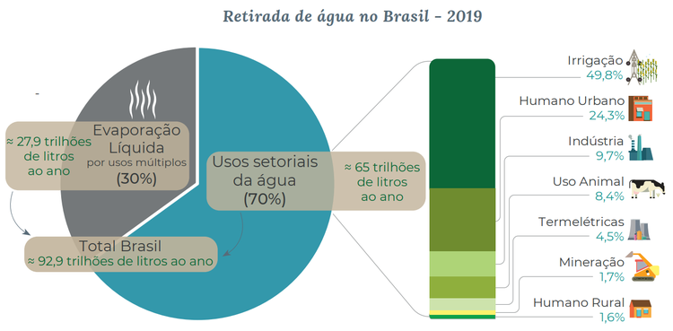

No Brasil, a água é utilizada principalmente para irrigação de lavouras, abastecimento público, atividades industriais, geração de energia, extração mineral, aquicultura, navegação, turismo e lazer. Cada uso depende e pode afetar condições específicas de quantidade e de qualidade das águas.
Os usos podem ser classificados em consuntivos (que retiram e consomem água, como o industrial) e não consuntivos (não consomem diretamente, mas dependem da manutenção de condições naturais ou de operação da infraestrutura hídrica, como o turismo e o lazer). Cerca de 93 trilhões de litros de água são retirados anualmente de fontes superficiais e subterrâneas para atender aos diversos usos consuntivos múltiplos e setoriais. A evaporação líquida, a irrigação, a termoeletricidade e algumas indústrias apresentam forte sazonalidade, ou seja, o consumo de água pode variar expressivamente dentre os meses de um mesmo ano.
O conhecimento sobre os usos da água é constantemente aprimorado por meio de levantamentos, estudos setoriais e cadastros de usuários. Para que vários setores usufruam da água, a ANA (Agência Nacional de Águas e Saneamento Básico) realiza estudos e emite normas que garantem o acesso aos recursos hídricos.
Na área de Usos da Água do SNIRH (Sistema Nacional de Informações sobre Recursos Hídricos) estão organizados estudos, painéis de indicadores, mapas interativos, ferramentas e metadados, garantindo ampla acessibilidade aos conteúdos produzidos pela ANA e parceiros. Na área de Regulação e Fiscalização do SNIRH também podem ser acessadas informações sobre os cadastros e outorgas de uso da água.
O Conjuntura dos Recursos Hídricos no Brasil apresenta, anualmente, um panorama atual e as principais novidades sobre o tema, de forma sintética e mais acessível para o público em geral.
Referências:
Site da ANA:
Site da SNIRH:
Fundo:
https://images6.alphacoders.com/607/607771.jpg
{kind=link}
Ilustração da Utilização de Água:
https://agenciabrasil.ebc.com.br/sites/default/files/atoms/image/abr300713_tng2422_tng2422.jpg
{kind=link}
Gráfco de Retirada de Água no Brasil